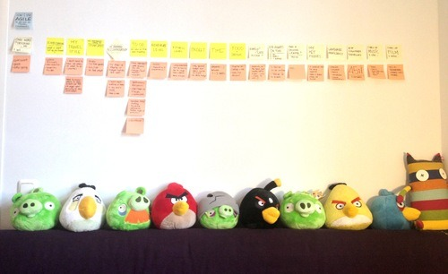

Fri, 01 Mar 2013 15:16:00 · agile · scumm · travel · friends · adventure
How I Use Agile to Decode My Travelling Companions
I love travel. It’s my creative muse. In a nation of workaholics, in a materialistic society, in a profession of over-achievers and obsessive compulsives, the ability to set everything aside, leave my surroundings and simply absorb and ‘be present’ are the only way for me to keep from getting burnout at work, and of life in general.

I travel a lot. Granted that most of it should probably be categorized as merely going places since it was for work. But on the off chance when I do travel, I went all the way. Going ’off the grid’ and all, both with or without companion. And never before it becomes so important for me to choose the right partner in crime to experience the adventure of the unknown. The destination is less significant as long as you go with the right (not perfect) travel mate. I learnt this the hard way in more than one occasion. Either I am a slow learner or I’m a big believer in second (or third) chances.
In light of this, I decided that the time of error is no longer an option. I am not getting any younger and time is of the essence. I realize that I’ve become one of those time-poor and (relatively) cash-rich individual but at the same time I loath rushing to places and call it traveling. I love slow travel. Opting for less places to go in exchange for more immersive experience.
And this is where Agile (yes, as in Agile Project Management) could lend a hand in helping me decode the 'right’ travel companion for my future adventures. I know that it might be a long shot, but at least there will be a dialogue of expectations and set goals defined in advance, as opposed to finding it the hard way while we’re on the road.
Frameworks:
- Personality POV
- Identify the right spectrum of 'compatible’ personality that has the potential to enrich travel experience
- No quirky habits, or extreme personality
- Budget & Time POV
- Help determines the type of travel, destination, and types of activity - Travel 'rank’ POV
- Seasones/novice traveler
- Open-mindedness (willingness to try something new)
And here are some variables that I used to help frame the thought process:
- One word to describe me (personality)
- Expectation ~ what I want out of my travel
- My travel style
- Planner vs. Go with the flow?
- My preferred choice of transportation
- My preferred style of accommodation
- To Do ~ my idea of FUN when travelling
- Adventure level
- Fitness level
- Budget
- Time
- Food + Drink preferences
- Early or Late riser?
- I’m always on time ~ Yes | Rarely | It depends
- Own a driving license ~ Yes | No
- My pet peeves
- Language proficiency
- # of countries travelled
- Types of music I like
- Types of film I enjoy
- …
I started to run this little experiment today with some friends both local and remote. And I am curious to find out the results. The variables I use might not be perfect, but it’s sufficient to start running the sprint, and iterate along the way.
Stay tuned for the results… which will be shared anonymously.
__
PS. If you keen to try out this little experiment, feel free to ping me…